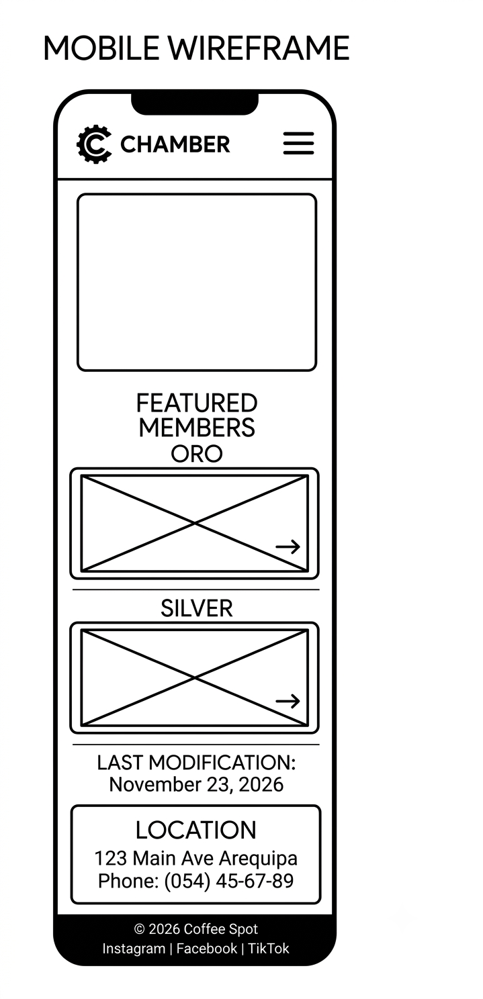
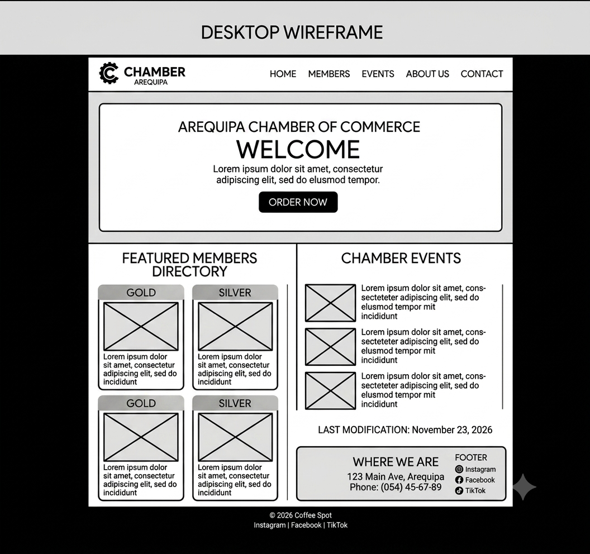

Site Name
Arequipa Chamber of Commerce
This name represents a professional organization dedicated to supporting businesses and fostering economic growth in Arequipa, Peru. It emphasizes locality and purpose, making it recognizable and relevant to the local business community.
Optional domain availability: arequipachamber.com
Site Purpose
The main purpose of this website is to serve as a digital hub for the Arequipa business community. To achieve this, it will provide the following services and information:
- Real-time Weather: A weather widget on the homepage using the OpenWeatherMap API to display current conditions in Arequipa.
- Spotlight Directory: A featured directory of chamber members categorized as Gold and Silver members, loaded dynamically from a JSON file.
- Events Calendar: Information about upcoming chamber events, networking opportunities, and business workshops.
- Responsive Design: A fully responsive layout with a hamburger navigation menu for mobile devices.
- Last Modified Date: Automatically displayed at the bottom of the page to show when the content was last updated.
User Scenarios
These are typical questions that site visitors might ask:
- Scenario 1: “I'm a business owner in Arequipa. How can I become a member of the chamber and what are the benefits?”
- Scenario 2: “What chamber events are coming up this month, and how can I register to attend?”
Color Schema
Professional and warm colors have been selected to represent the chamber's authority and Arequipa's vibrant business community. This document already uses these colors in its design (check the backgrounds, borders, and text).
- #1B3A4B (Deep Blue) — Used for titles, headings, navigation, and footers. It conveys trust, professionalism, and stability.
- #F5F0E8 (Warm Beige) — Used for section backgrounds and cards. It provides warmth and a welcoming feel.
- #C49A6C (Gold) — Used for call-to-action buttons, highlights, and Gold member badges. It represents excellence and prestige.
Typography
The following Google Fonts will be used to reflect professionalism and readability. This document already uses both fonts (check the headings and body text).
- Playfair Display (serif) — Used for headings (h1, h2, h3). It is an elegant and authoritative font, ideal for a chamber of commerce.
- Nunito (sans-serif) — Used for paragraphs, lists, and general body text. It is rounded, friendly, and highly readable for directory information and events.
Wireframes
The following wireframes are black and white sketches showing the structure of the home page in both mobile and desktop views. They focus on layout and functionality, not colors, images, or typography.

